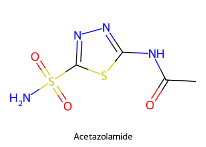
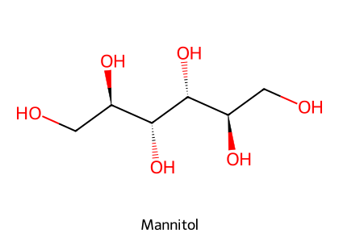
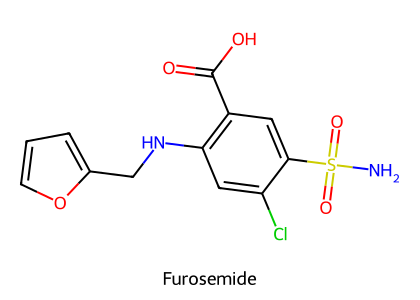
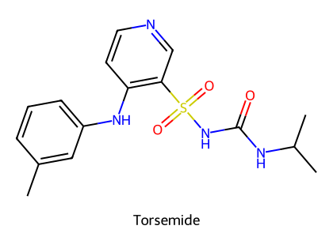
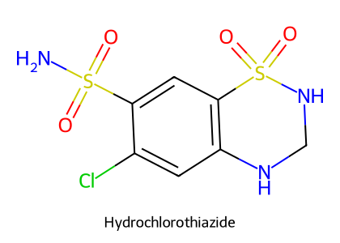
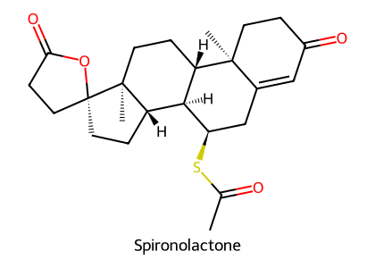
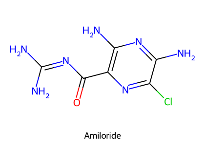

重點摘要
腎絲球每天濾出大量濾液，99% 會被再吸收。利尿劑就是在腎小管不同段落「擋住鈉的再吸收」，鈉留在管腔、水跟著出去。關鍵是位置決定效力與副作用：越上游、該段負責的鈉越多，利尿越強（loop 擋 ~35%，最強）；所有擋在集尿管上游的利尿劑都會把更多鈉送到集尿管，以鈉換鉀 → 低血鉀；只有擋在集尿管本身的保鉀利尿劑會反過來保鉀甚至高血鉀。鈣的走向也取決於位置：loop 讓鈣流失（治高血鈣），thiazide 讓鈣保留（治草酸鈣結石）。
- 作用位點：CAI → 近曲小管；滲透性 → 整段腎小管；loop → 亨利氏環上行粗段（Na⁺/K⁺/2Cl⁻）；thiazide → 遠曲小管前段（Na⁺/Cl⁻）；保鉀與 aldosterone 拮抗劑 → 集尿管。
- Loop 利尿劑讓 Ca²⁺、Mg²⁺ 流失（破壞 K⁺ 回收造成的管腔正電位）；thiazide 不影響這個電位，反而減少尿鈣。
- Furosemide 要經近曲小管有機酸分泌才能到達作用位點；NSAID 阻斷它誘導的 PGE2，減弱利尿作用。
- Furosemide 在馬口服吸收只有 5% → 馬用 IV；用於預防賽馬運動誘發性肺出血（EIPH）。
- Torsemide 效力約 furosemide 10 倍、作用較長；貓 CHF 時排鉀較少。貓對 loop 利尿劑很敏感，從低劑量開始。
- Loop 毒性：低血鉀代謝性鹼中毒、脫水、耳毒性（ethacrynic acid ＞ furosemide ＞ torsemide；避免併用 aminoglycoside）、高尿酸、低血鎂。
- Mannitol 不可用於急性肺水腫與全身性水腫：會先擴張血容，加重 CHF。
- 保鉀利尿劑（amiloride、triamterene、spironolactone）的風險是高血鉀，尤其在腎功能不全或併用 β 阻斷劑、ACEI、ARB 時。
本頁藥物總覽
劑量與途徑取自 HBK 劑量附表（Chapter 9）與 VPT10 Ch.24；臨床使用以院內規範為準。
| 藥物 | 類別／作用位點 | 途徑與參考劑量（犬貓） | 主要用途 |
|---|---|---|---|
| Acetazolamide | CAI／近曲小管、眼睫狀體 | PO 犬 5–10 mg/kg q8–12h、貓 7 mg/kg q8h；急性青光眼可先 IV 一劑 | 青光眼、高海拔疾病、代謝性鹼中毒 |
| Methazolamide、Dichlorphenamide | CAI | PO：methazolamide 2–6 mg/kg q8–12h；dichlorphenamide 犬 2.2–5 mg/kg、貓 1 mg/kg q8–12h | 青光眼 |
| Mannitol | 滲透性／整段腎小管 | IV 緩慢（5–20% 溶液，15–60 分鐘）：一般 1–3 g/kg；急性青光眼 0.25–0.5 g/kg；腦水腫 1 g/kg 30 分鐘、q4–6h 可重複 | 少尿性腎衰竭、中毒、腦水腫、青光眼 |
| Glycerol | 滲透性 | PO 1–1.5 g/kg 起始 | 青光眼（口服替代 mannitol） |
| Furosemide（Lasix®） | Loop／上行粗段 Na⁺/K⁺/2Cl⁻ | IV／IM／SC／PO：犬 2–6 mg/kg q8–12h、貓 1–4 mg/kg q12h（HBK）；馬 IV | 各種水腫、CHF、高血鈣、少尿、EIPH |
| Torsemide | Loop | PO 0.2 mg/kg q24h–q8h（VPT10，犬） | CHF（效力 10×、作用較長；貓排鉀較少） |
| Bumetanide | Loop | IV 0.02–0.1 mg/kg q8–24h | 水腫（效力約 furosemide 40–50 倍，VPT10） |
| Ethacrynic acid | Loop（phenoxyacetic acid，非磺胺） | IV／IM 0.2–0.4 mg/kg q4–12h | 耳毒性最強 |
| Hydrochlorothiazide | Thiazide／遠曲小管 Na⁺/Cl⁻ | PO 犬 2–4 mg/kg q12h、貓 1–2 mg/kg q12h；牛 IV／IM | CHF 輔助、草酸鈣結石、腎性尿崩症、乳房水腫 |
| Chlorothiazide | Thiazide | PO 20–40 mg/kg q12h | 同上 |
| Trichlormethiazide＋Dexamethasone（Naquasone®） | Thiazide＋糖皮質素 | PO q24h | 牛乳房水腫、馬發炎性水腫 |
| Spironolactone | Aldosterone 拮抗／集尿管 | PO 1–4 mg/kg q12h（HBK）；VPT10：2 mg/kg q24h | 難治性水腫輔助、CHF、礦物皮質素過多 |
| Triamterene | Na⁺ 通道阻斷／集尿管 | PO 1–2 mg/kg q12h | 與 thiazide 或 loop 合用減少失鉀 |
| Amiloride | Na⁺ 通道阻斷／集尿管 | PO q24h | 同上 |
| Theophylline、Aminophylline、Caffeine | Methylxanthine，adenosine A1 拮抗 | Theophylline IV／IM／PO | 支氣管擴張（非利尿用途） |
| Ammonium chloride | 尿液酸化劑 | PO 犬 100 mg/kg q12h、貓 800 mg/隻（HBK） | 尿液酸化、祛痰、矯正低氯性代謝性鹼中毒 |
| NaHCO₃、Potassium citrate | 尿液鹼化劑 | PO（NaHCO₃ 亦可 IV） | 代謝性酸中毒；預防胱胺酸與尿酸結石 |
腎臟功能與尿液形成
- 排除含氮廢物（尿素）與外來物、代謝物
- 回收葡萄糖、胺基酸等
- 調節體液（水與鈉的滯留）與電解質
- 調節 pH：持續排出 H⁺、調節 HCO₃⁻
- 內分泌：EPO、renin
- 過濾：小分子離開腎絲球微血管；初始濾液與血漿相似，但沒有蛋白質與血球
- 選擇性再吸收：Na⁺ 主動運回（帶著葡萄糖等），陰離子被動跟隨，水以滲透方式回收；99% 濾液被再吸收
- 分泌：H⁺、NH₄⁺、肌酸酐與部分藥物由轉運體分泌
講義問：「為什麼不只分泌不需要的東西？」——因為先大量過濾再選擇性回收，才能排除身體不認得的外來物，不必為每一種毒物準備專屬的分泌系統。
近曲小管的有機酸與有機鹼分泌系統
| 系統 | 受質 | 藥理意義 |
|---|---|---|
| 有機酸（陰離子）分泌 | 尿酸、penicillins、p-aminohippuric acid；loop 利尿劑與 thiazides | 利尿劑靠這條路進入管腔才能作用；probenecid 抑制此系統，過去用來延長 penicillin 作用 |
| 有機鹼（陽離子）分泌 | 肌酸酐、procainamide、choline；triamterene、amiloride | — |
VPT10 Ch.24：loop 利尿劑與血漿蛋白結合 >95%，幾乎不經腎絲球過濾，必須靠近曲小管有機酸分泌才能到達管腔內的作用位點。這也解釋了為什麼腎功能差、或與其他有機酸（如 NSAID）競爭時，利尿效果會下降。
腎元各段與利尿劑作用位點必考
| 段落 | 重吸收 | 主要轉運 | 作用的利尿劑 |
|---|---|---|---|
| 近曲小管 | NaHCO₃ 85%、NaCl 40%、水 60%；幾乎所有葡萄糖與胺基酸 | Na⁺/H⁺ 交換（碳酸酐酶）；水與鹽等比例吸收 | CAI（acetazolamide）、滲透性 |
| 亨利氏環下行細段 | 水 ~10% | 髓質高張驅動的被動吸水；無主動鹽吸收 | 滲透性（mannitol、葡萄糖等不被吸收的溶質阻止水吸收；糖尿病多尿即同理） |
| 亨利氏環上行粗段 | NaCl ~35%；不透水 | Na⁺/K⁺/2Cl⁻ 共同轉運；K⁺ 回收產生管腔正電位 → 驅動 Ca²⁺、Mg²⁺ 吸收 | Loop（furosemide、bumetanide、torsemide、ethacrynic acid，結合 Cl⁻ 位點） |
| 遠曲小管 | Na⁺ ~10%；不透水 | Na⁺/Cl⁻ 共同轉運；無 K⁺ 回收、無管腔正電位 | Thiazides（結合 Cl⁻ 位點；不影響 Ca²⁺／Mg²⁺ 的電位驅動） |
| 晚期遠曲小管與集尿管 | NaCl 2–5%（決定最終尿鈉） | 主細胞：Na⁺ 通道進、K⁺ 通道出（Na⁺/K⁺ 交換）；間細胞：H⁺ 分泌；aldosterone 增加 Na⁺ 通道；ADH 增加水通透 | 保鉀（amiloride、triamterene）、aldosterone 拮抗劑（spironolactone） |
Loop：Na⁺/K⁺/2Cl⁻ 被擋 → 細胞內 K⁺ 不再回流到管腔 → 管腔正電位消失 → Ca²⁺、Mg²⁺ 無法被電位推回血液 → 尿鈣、尿鎂增加（治高血鈣、副作用低血鎂）。
Thiazide：遠曲小管本來就沒有這個電位，所以不會造成鈣流失；HBK 進一步指出 thiazide 增加遠曲小管 Ca²⁺ 吸收，減少尿鈣（治草酸鈣結石）。
Aldosterone 與 ADH
腎上腺皮質分泌，受 angiotensin II 刺激；活化礦物皮質素受體 → 表現 aldosterone 誘導蛋白（Na⁺ 通道增加）→ 在遠曲小管再吸收 Na⁺、排出 K⁺ → 血容與血壓上升。
後葉分泌的九胜肽；增加集尿管水通透 → 濃縮尿液；ADH 減少 → 尿量增加。用於尿崩症與人的敗血性休克（升壓作用）。詳見 腦下垂體荷爾蒙。
利尿劑的臨床用途（講義）
- 消除水腫（腎、肝等原因）
- 矯正離子失衡（高血鈣）
- 降低心臟充填壓（鬱血性心衰竭）
- 降血壓
- 降眼壓（青光眼）
碳酸酐酶抑制劑 Carbonic Anhydrase Inhibitors

Acetazolamide、methazolamide、dichlorphenamide，都是磺胺衍生物。抑制近曲小管碳酸酐酶 → 可交換的 H⁺ 減少 → Na⁺、HCO₃⁻ 流失增加 → 鹼性尿；利尿作用輕微。碳酸酐酶也存在於眼、胃黏膜、胰臟與 CNS。
結構式依 PubChem 資料以 RDKit 自繪。
| 用途 | 機轉 |
|---|---|
| 青光眼（最常見適應症） | 睫狀體房水生成依賴碳酸酐酶 → 房水減少 → 眼壓下降 |
| 尿液鹼化、矯正代謝性鹼中毒 | 排出 HCO₃⁻ |
| 高海拔疾病 | 造成輕度代謝性酸中毒 → 刺激呼吸中樞（講義：「application?」的答案） |
- 代謝性酸中毒：體內 HCO₃⁻ 儲存減少、Cl⁻ 滯留 → 高氯性酸中毒；HBK：酸中毒最後造成耐藥、利尿減弱。
- 腎結石：鈣鹽在鹼性尿中相對不溶。
- 腎臟失鉀：集尿管 HCO₃⁻ 增加 → 管腔負電位增加 → K⁺ 排出增加。
- HBK：口服常見嘔吐；肝病禁用——尿液鹼化讓腎臟產生的氨回到全身循環，可能誘發肝性腦病。
滲透性利尿劑 Mannitol

- 5–20% 溶液緩慢 IV 輸注（口服吸收差）；也可用 glycerin
- 血漿 t½ 1–2 h
- 在整段腎小管以滲透壓留住水分
結構式依 PubChem 資料以 RDKit 自繪。
| 適應症（講義） | 教科書補充（HBK） |
|---|---|
| 犬貓少尿性腎衰竭 | 作為 furosemide 的輔助；必須監測尿量 |
| 藥物過量與中毒 | 強迫利尿，加速經腎排除的毒物排出 |
| 降低顱內壓或眼壓（腦水腫、青光眼） | 急性青光眼 0.25–0.5 g/kg IV；腦水腫 1 g/kg IV 30 分鐘 |
| 預防低血容性休克 | 腦水腫時可預防常見的低血容性休克 |
不可用於急性肺水腫與全身性水腫：mannitol 一開始會把水從細胞內拉到細胞外、擴張血容，可能造成肺水腫、使 CHF 失代償；而它排鈉的效果又小。其他副作用不常見：體液流失若沒有補充 → 脫水與高血鈉。
Loop 利尿劑重要


結構式依 PubChem 資料以 RDKit 自繪。Furosemide、torsemide、bumetanide 是磺胺衍生物，ethacrynic acid 是 phenoxyacetic acid（VPT10：雖是磺胺衍生物，但沒有磺胺類抗生素的副作用）。
機轉
- 抑制上行粗段 Na⁺/K⁺/2Cl⁻ 共同轉運體（結合 Cl⁻ 位點）。
- 增加 PGE2 生成 → furosemide 增加腎血流、增加靜脈容量（venous capacitance）、降低肺血管阻力——這就是 furosemide 在肺水腫時「還沒開始利尿就先改善呼吸」的原因。
- NSAID 會減弱 furosemide 的利尿、排鈉、排氯作用（阻斷 PGE2）。
| 藥動學 | Furosemide（F） | Torsemide（T） |
|---|---|---|
| 口服吸收 | 良好，馬例外（5%）→ 馬用 IV | 良好 |
| 到達作用點 | 近曲小管有機酸分泌 → 到達亨利氏環 | |
| 排除 | 80% 原形經尿、20% 葡萄糖醛酸結合 | — |
| 半衰期 | 多數動物 1–2 h | 犬 8 h |
| 利尿作用時間 | 3–6 h（HBK：IV 2–20 分鐘起效、持續 2 h） | 12 h |
| 效力 | 1 | 約 10 倍 |
主要用途（講義）
- 水腫：心因性、肺、全身性等（HBK：快速消除水腫的首選）。
- 預防賽馬運動誘發性肺出血（EIPH）與鼻出血：降低左心室（HBK：左心房）壓力；賽前 1–2 h IV，受賽馬規則管制。
- 高血鈣：增加尿鈣；HBK：以含 KCl 的生理食鹽水 IV。
- 鬱血性心衰竭：貓用 torsemide 比 furosemide 好，因為排鉀較少（機轉未明）。
- 急性腎衰竭與少尿：可合併 mannitol。
- 低血鉀代謝性鹼中毒：更多 NaCl 與水送到集尿管 → K⁺、H⁺ 分泌增加。
- 脫水。
- 耳毒性：劑量相關聽力喪失（通常可逆）；ethacrynic acid ＞ furosemide ＞ torsemide；避免併用 aminoglycosides。
- 高尿酸血症：低血容狀態下尿酸再吸收增加。
- 低血鎂。
- 貓非常敏感，從低劑量開始。HBK 另列：短暫顆粒性白血球減少與血小板減少；高劑量造成肌肉無力、CNS 抑制、循環衰竭。
Thiazides

阻斷遠曲小管前段 Na⁺/Cl⁻ 共同轉運。因為 90% 的鈉在到這裡之前已被吸收，利尿作用中等，離子排出接近生理比例，對細胞外液電解質的干擾較小（HBK）。對碳酸酐酶只有微弱抑制，常用劑量下不參與利尿。
結構式依 PubChem 資料以 RDKit 自繪。
臨床用途（講義）
| 用途 | 說明 |
|---|---|
| 犬貓鬱血性心衰竭 | HBK：長期利尿、作為心臟藥物的輔助；PO q12h |
| 犬草酸鈣結石 | 減少尿鈣排出（HBK：hydrochlorothiazide PO q12h，用於高尿鈣犬的復發性草酸鈣結石） |
| 水腫 | furosemide 比較常用 |
| Naquasone®（trichlormethiazide＋dexamethasone） | 牛乳房水腫（HBK：產後不超過 48 h）、馬發炎性水腫 |
| 腎性尿崩症（矛盾效果） | ① 利尿造成血容收縮 → 近曲小管再吸收增加；② 恢復集尿管 aquaporin-2 表現 → 尿量反而減少 |
| 人的高血壓 | 過去使用 |
- 低血鉀代謝性鹼中毒
- 高尿酸血症
- 高血糖：減少 proinsulin 轉成 insulin、減少 insulin 釋放 → 可能加重糖尿病
- 人：高血脂（膽固醇增加 5–15%、LDL 增加）
保鉀利尿劑 Potassium-Sparing Agents


結構式依 PubChem 資料以 RDKit 自繪。
| Amiloride、Triamterene | Spironolactone | |
|---|---|---|
| 機轉 | Na⁺ 通道阻斷劑（集尿管主細胞）；不依賴 aldosterone | Aldosterone 競爭性拮抗劑；減少 aldosterone 媒介的 Na⁺/K⁺ 交換；aldosterone 高時最有效（HBK） |
| 藥動學 | 經有機鹼分泌系統；triamterene 在肝臟變成活性代謝物 hydroxytriamterene，再行硫酸結合；amiloride 原形經腎排出 | 活性代謝物 canrenone，t½ 16–20 h；利尿作用持續 2–3 天 |
| 用途 | 與 thiazide 或 loop 合用以減少失鉀 | 同左；也用於礦物皮質素過多（例如腎上腺腫瘤） |
| 途徑 | PO（triamterene q12h、amiloride q24h） | PO（犬貓 q12h） |
- 高血鉀：風險在腎功能不全、RAS 被抑制（β 阻斷劑、ACEI 如 enalapril／benazepril、ARB 如 telmisartan）、單獨使用保鉀利尿劑時上升。HBK 另列糖尿病、血栓栓塞疾病；保鉀利尿劑之間不可併用，高血鉀病患禁用。
- 代謝性酸中毒：H⁺ 過度滯留、HCO₃⁻ 排出。
- 不孕與性功能障礙：spironolactone 阻斷性類固醇受體（VPT10：作用於 progesterone 與 androgen 受體）。
HBK Ch.8（心血管）：即使使用 ACEI，aldosterone 仍可能被釋放（aldosterone escape），所以 spironolactone 在 CHF 有其角色；但併用 ACEI 或補鉀時要小心。VPT10 Ch.24：spironolactone 可能改變 digoxin 的吸收與腎清除，併用時建議監測 digoxin 濃度。
作用位點總整理（講義）
| 類別 | 作用位點 | 對 K⁺ | 對 Ca²⁺ |
|---|---|---|---|
| CAI | 近曲小管 | ↓（流失） | —（鹼性尿易結石） |
| 滲透性 | 整段腎小管 | — | — |
| Loop | 上行粗段 | ↓↓ | 流失 |
| Thiazides | 遠曲小管前段 | ↓ | 保留 |
| 保鉀／aldosterone 拮抗劑 | 集尿管 | ↑（保鉀） | — |
其他：Methylxanthines、酒精、尿液酸鹼化劑
Adenosine A1 受體拮抗劑 → 擴張腎絲球前血管 → GFR 上升 → 利尿。Theophylline 臨床上用於支氣管擴張，不是用來利尿。HBK：利尿在鹼性尿時較強，所以草食動物比肉食動物明顯；副作用為興奮、肌肉顫動、嘔吐、心悸與低血壓。
CNS 抑制劑；抑制腦下垂體釋放 ADH → 增加水（不是離子）的流失 → 非常稀的尿；宿醉。
尿液酸化與鹼化劑
| 藥物 | 機轉 | 用途 | 禁忌 |
|---|---|---|---|
| NH₄Cl | 肝臟代謝成尿素、H⁺、Cl⁻；也是祛痰劑（輕度刺激胃黏膜） | 矯正低氯血症與代謝性鹼中毒；降低尿液 pH、輕度利尿；溶解或預防尿結石；HBK：以離子捕捉加速可解離藥物或毒物排出 | 腎功能受損（無法代償的酸中毒）；肝功能受損（無法代謝） |
| NaHCO₃ | 鹼化 | 提高尿液 pH；矯正代謝性酸中毒 | — |
| Potassium citrate | 鹼化；citrate 結合 Ca²⁺ | 提高尿液 pH → 預防胱胺酸與尿酸結石；citrate 與鈣結合可減少含鈣結石 | — |
講義在 NH₄Cl 投影片寫「溶解／預防尿結石（calcium oxalate）」。但草酸鈣結石在酸性尿中較容易形成，同一份講義也把 thiazide（減少尿鈣）與 potassium citrate（鹼化並結合鈣）列為處理含鈣結石的方法；尿液酸化通常用於磷酸銨鎂（struvite）結石。HBK 只寫「尿液酸化以溶解或預防尿結石」，沒有指明種類。這一點建議與老師確認；考試若照講義出題，以講義文字為準。
常見腎毒性藥物
| 毒性型態 | 藥物（講義） |
|---|---|
| 腎小管壞死、急性腎衰竭 | Aminoglycosides、重金屬、Amphotericin B |
| 腎灌流受損 | NSAIDs、ACE 抑制劑、Cyclosporine、利尿劑 |
| 急性間質性腎炎 | Sulfonamides（結晶尿）、NSAIDs、利尿劑 |
| 慢性腎衰竭 | NSAIDs、Cyclosporine |
過度利尿 → 脫水、腎灌流下降 → 腎前性氮血症。當利尿劑與 NSAID、ACEI 同時使用時（心臟病老犬常見的組合），三者都會降低腎灌流，要監測腎指數與電解質。
臨床整合：共病與用藥
| 情境 | 問題 | 處理方向 | 出處 |
|---|---|---|---|
| 使用 digoxin 的心臟病犬＋loop 或 thiazide | 低血鉀增加 digoxin 毒性，可能造成嚴重心律不整 | 監測 K⁺，必要時補鉀或合併保鉀利尿劑；見 強心配糖體 | HBK Ch.18 |
| ACEI＋spironolactone | 高血鉀 | 監測血鉀；避免同時補鉀 | 講義；HBK Ch.8；VPT10 Ch.24 |
| 使用 aminoglycoside 的動物需要利尿 | 耳毒性加成；兩者都傷腎 | 改用其他類利尿劑（HBK） | 講義；HBK |
| 使用 NSAID 的動物需要 furosemide | NSAID 阻斷 PGE2 → 利尿效果下降；兩者都降低腎灌流 | 評估能否停用 NSAID；監測腎指數 | 講義 |
| CHF 合併肺水腫 | Mannitol 擴張血容 → 惡化 | 用 loop 利尿劑，不用 mannitol | 講義；HBK |
| 貓 CHF | 對 loop 利尿劑敏感、易脫水與低血鉀 | 低劑量開始；torsemide 排鉀較少 | 講義 |
| 糖尿病 | Thiazide 造成高血糖 | 避免或密切監測血糖 | 講義；HBK |
| 肝病 | CAI 鹼化尿液 → 血氨上升 → 肝性腦病；NH₄Cl 無法代謝 | 避免 CAI 與 NH₄Cl | 講義；HBK |
| 腎功能不全 | 保鉀利尿劑 → 高血鉀；NH₄Cl → 無法代償的酸中毒 | 避免 | 講義；HBK |
| 高血鈣（腫瘤、中毒） | 需要排鈣 | 先補足水分，再用 furosemide（含 KCl 的生理食鹽水 IV）；不用 thiazide（會保鈣） | 講義；HBK |
| 馬 | Furosemide 口服吸收 5% | IV 給藥 | 講義 |
| 產食動物 | 殘留 | VPT10：牛用 furosemide 口服與注射劑型乳與屠宰休藥期 48 h | VPT10 |
※ 降血壓與 RAAS 相關的藥物見 降血壓藥物、腎素血管收縮素系統藥物。
考點整理
手邊的課程考古中，利尿相關題目只有 methylxanthines：caffeine 具有刺激心臟、支氣管鬆弛、利尿作用（「抑制胃酸分泌」不是它的作用）；methylxanthines 的機轉是 adenosine 拮抗劑。2025 期末考未出利尿劑題目。
以下是依講義與教科書推測的方向，並非出自歷屆國考題目：各類利尿劑的作用位點與轉運體；loop 與 thiazide 對鈣的相反作用（高血鈣用 furosemide、草酸鈣結石用 thiazide）；低血鉀代謝性鹼中毒 vs 保鉀利尿劑的高血鉀；furosemide 耳毒性與 aminoglycoside 併用禁忌；馬口服 furosemide 吸收差、EIPH；mannitol 不可用於肺水腫；CAI 治療青光眼；thiazide 治療腎性尿崩症的矛盾效果。
學習重點整理
| 類別 | 位點 | 代表藥 | 關鍵用途 | 關鍵毒性 |
|---|---|---|---|---|
| CAI | 近曲小管 | Acetazolamide | 青光眼、高海拔疾病 | 高氯性代謝性酸中毒、結石、失鉀；肝病禁用 |
| 滲透性 | 整段 | Mannitol | 少尿、中毒、腦水腫、青光眼 | 擴張血容 → 肺水腫；脫水、高血鈉 |
| Loop | 上行粗段 | Furosemide、Torsemide | 水腫、CHF、高血鈣、EIPH | 低血鉀鹼中毒、耳毒性、低血鎂；貓敏感 |
| Thiazide | 遠曲小管 | Hydrochlorothiazide | CHF 輔助、草酸鈣結石、腎性尿崩症 | 低血鉀、高尿酸、高血糖 |
| 保鉀 | 集尿管 | Spironolactone、Amiloride、Triamterene | 減少失鉀、礦物皮質素過多 | 高血鉀、酸中毒、性功能障礙 |